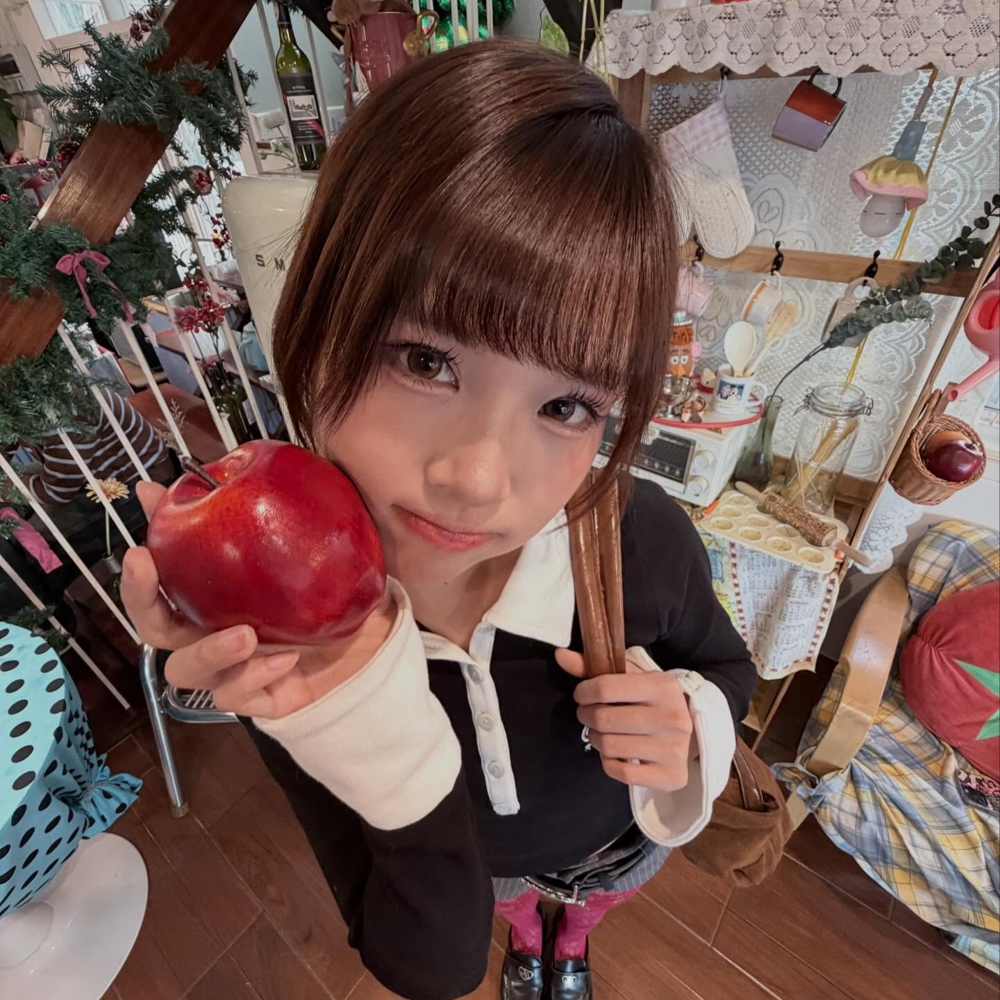
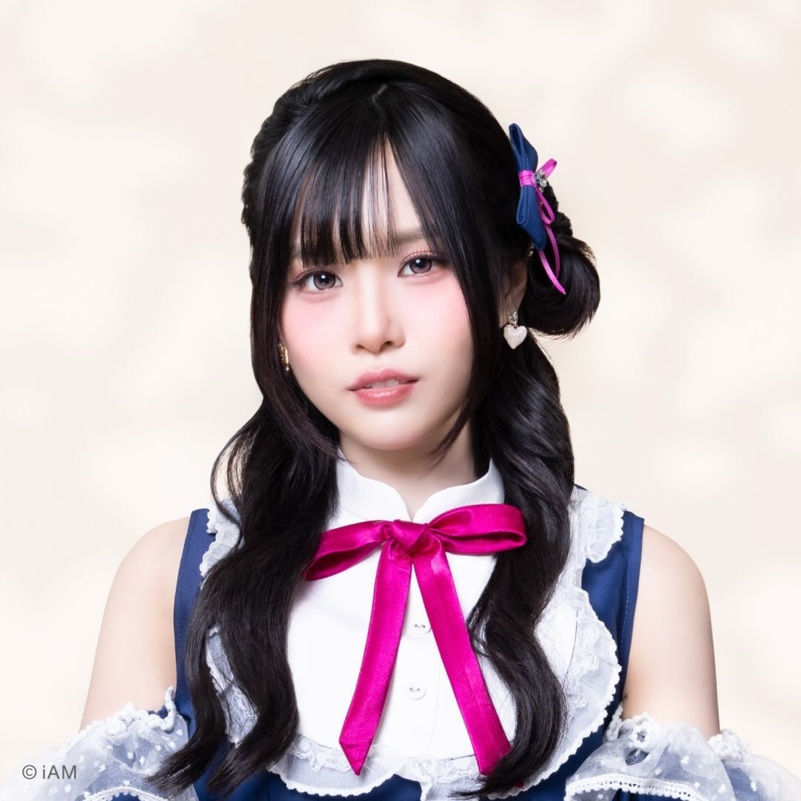

Profile

Team NV น้องภัยพิบัติSirikorn Nilkasap
L · แอลแอล - สิริกร นิลกษาปน์ พี่คนรองแห่ง BNK48 รุ่นที่ 4 เมมเบอร์ที่โดดเด่นเรื่อง performance เอาอยู่ทุกสไตล์ไม่ว่าจะน่ารัก แซ่บ เท่ หรือสายฮา ส่วนเรื่องวาไรตี้ก็จัดเต็มไม่แพ้ใคร การันตีด้วยฉายา "น้องภัยพิบัติ" ที่เล่นใหญ่จนแฟนคลับคาดไม่ถึงอยู่บ่อย ๆ
13 กุมภาพันธ์ 2003
(23
ขวบ)
BNK48 4th Gen
Team NV
แมวดำ
ภัยพิบัติ
#ผู้ประสบภัยพิบัติครับจ้า
มันเกลียว, นั่งเหม่อ, นอนดูโคนัน, สีเทา & สีชมพู, ปาล์มมี่
Catchphrase"ถึง L จะไม่ใช่ alphabet ตัวที่หนึ่ง แต่ขออยู่ในที่ที่นึงในหัวใจของคุณได้ไหมคะ"
Catchphrase 2"พี่คะใส่เสื้อเบอร์ไร ก็ให้ตอบเขาไปว่าไซส์ L ไซส์ L
Alphabet 12 คือไรก็ให้ตอบเขาไปว่าตัว L ตัว L
แล้วถ้าถามว่าโอชิใครก็ให้ตอบเขาไปว่าน้อง L น้อง L
มีแอลนู่นแอลนั่นแอลนี่ มีแอลนู่นแอลนั่นแอลนี่
ก็มีแต่ L คนนี้ ก็มีแต่ L มีแต่ L"
Facts about L ₍ᐢ. ̫.ᐢ₎
ที่มาของชื่อ L
มาจากคำว่า Elle (ภาษาฝรั่งเศส = ผู้หญิง) และเกิดวันที่ 13 ก.พ. เลยคิดว่าตัว L ตัวเดียวอาจหมายถึง Love ด้วย
อนิเมะที่รักมาก
ดูโคนันมาตั้งแต่เด็ก (เมนอามุโร่ & มัตสึดะ) และชอบเรื่อง IDOLiSH7 (เมนพี่เท็น)
สีเทา & สีชมพู
ชอบทั้งสีเทาและสีชมพู ชอบมองไปที่ของสีเทา ๆ แต่ของติดตัวส่วนใหญ่จะเป็นสีชมพู
ของกินโปรด
มันฝรั่งเกลียวทอด ของโปรดอันดับหนึ่งในใจ คิดถึงมันเกลียวตลอด!
สัตว์ที่ชอบ & กลัว
ชอบแมว, หมาโกลเด้น, แพนด้า, เสือ, เม่นแคระ · แอบกลัวค้างคาวกับปลาดุก
เพลงญี่ปุ่นโปรด
ชอบฟังเพลงญี่ปุ่นมาก เพลงโปรดคือ "Be With You" จากอนิเมะ Hotarubi no Mori e
Wataridoritachi ni Sora wa Mienai
BNK48 & CGM48 Senbatsu General Election 2026
เซ็นเตอร์เพลง Undergirls จากการเลือกตั้งครั้งที่ 6
Highlights

เพลงที่ติดเซ็มบัตสึ (16 เพลง · 2× Center)
Socials

L's Socials
Contact for work (iAM Official)
Instagram Feed
@l.bnk48official
Sisasterteam
มาเป็นชาวผู้ประสบภัยด้วยกัน!
ช่องทางหลักของบ้านแฟนคลับน้องแอล สำหรับติดตามตารางงาน โปรเจกต์ซัพพอร์ต และร่วมพูดคุยกับชาวผู้ประสบภัยทุกคน